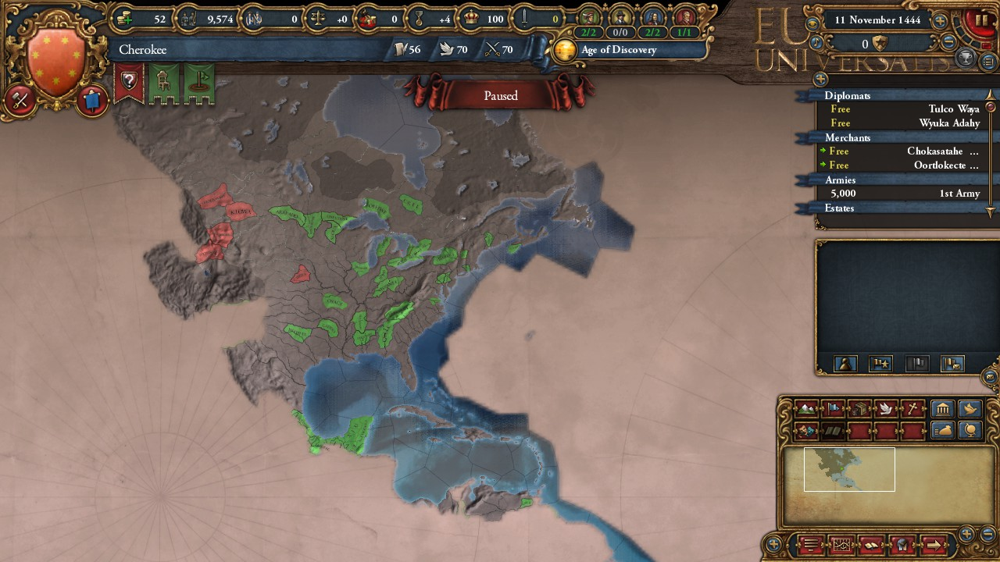
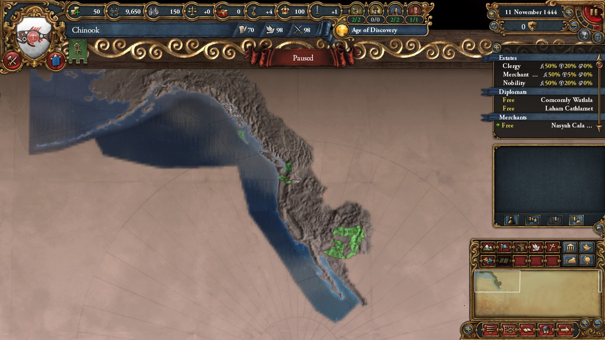
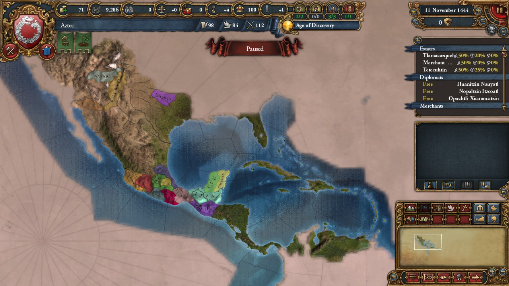
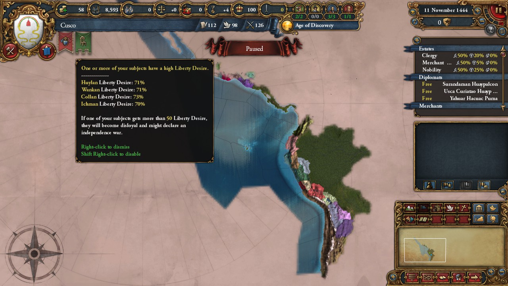
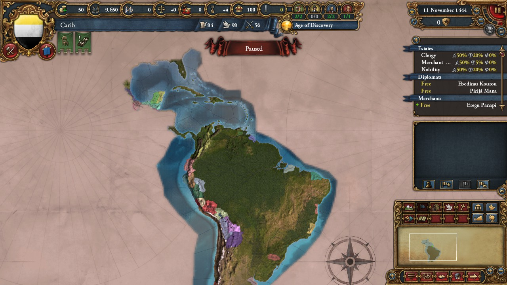

Hi Everyone, it's me again. Last week you may have notice there was no dev diary. That's because last week, I was working on a program to help build this project a little faster, something I call the ConsoleProvinceEditor.
If you've ever wanted to make major changes to the world map, you may have found that Much of the problem in doing that is making many changes over a huge number of files, in particular, the province files. With this app, you can change self defined regions by writing phrases to them, or deleting phrases from them. It is not ready for public use, but you can see the development progress on my Github
But anyway, Let's get straight to the progression of the mod:
As of today, Version 0.3, American Tech has been released.
Across the American World, Feudalism is accepted effectively everywhere, excepting in the hordes over the Great Plains. Each nation has had their vision expanded to show some level of connection to other groups in the americas. Some more bookmarks have been added with just a little hint of things to come in further releases :) .
On the East Coast, not much has changed, but the American nations are more organized than they once more. In the Great Plains, a few nations have yet to adopt organized structures of society.
West of the Rockies, the Californians are relatively isolated from the rest of the world. Dangerous tribes control the rockies, and their power is not great enough to contest them. This region is empty now, but it is intended to be filled to the brim with minor nations by version 0.8 .
Mexico has remained largely unchanged since the previous version. Their vision and tech have grown, but the nations there have yet to be revamped properly.
In the Andean Mountains, the Incan Empire exists as a collection of highly disloyal nobles. What could have happened in the past to cause this? Maybe one day we'll find out...
The Emporer in Cusco holds waning control over nearby nobles and the high priest of Ichima, but his control is waning. A Cusco Player may find they may wish to retract even further before reuniting the disloyal nobles.
No major changes have yet come to this region,but here's an image of South American Vision at the game's start.
So what's coming next? Well, version 0.4.0 seeks to make Europe a primitive haven. In particular, I'll be making Western into ancient Germanic, Eastern into Slavic, and Ottoman into Greek. What does this all actually mean? You'll have to wait to see exactly what that could mean in version 0.4.0, European Natives!
Note, you'll see I've made changes to the overall timeline. As I've worked on this project, I've made changes to what each sprint to make them more in line with what I want to see happen, and what I think I can accomplish.
This release was completed June 3rd. Removes the reformable portion of the native faiths. This will allow them to accept institutions.
This release was completed June 10th. Reroutes trade nodes to flow ultimately to American nodes.
Reworks american technology groups, to make them similar to european groups.
Reworks European technology groups to make them silimar to where American groups were.
Drastically reduces the size of European nations, lower devlopment significately, making it an easy target for annexation. Several Tags will be removed or kept as placeholders until their replacement can be arranged.
Change how institutions spawn to decentralize their development, and ensure that America has a slight edge in developing them. This will also allow different parts of the world to develop institutions somewhat separately.
Changes ages and their goals to more closely align with the American focus. Nations that gain a special boost will drastically change.
Drastically increase the amount of development in America. Increase the size of many nations, and add several new tags.
This release will constitute the minimal goal for this project. At this point, I do not promise any further development, but I do plan to maintain the project through each update.
Remove many of the European based events. This may speed the game up, and should fix issues from removing a large portion of Europe.
Consolidates Abrahamic religions and lowers their influence drastically. Adds new Polystheistic religions to Europe. They may have a reform mechanic, I haven't decided.
Once Dharma releases, I plan to add unique government reforms for the Americas and Europe.
Adds many American Based Events and lore for users to enjoy.
From here on, I've not decided a path for this project. Most Likely, Ill work on each continent individually, and polish the mod until I consider it fully stand alone, then make the 1.0 release.